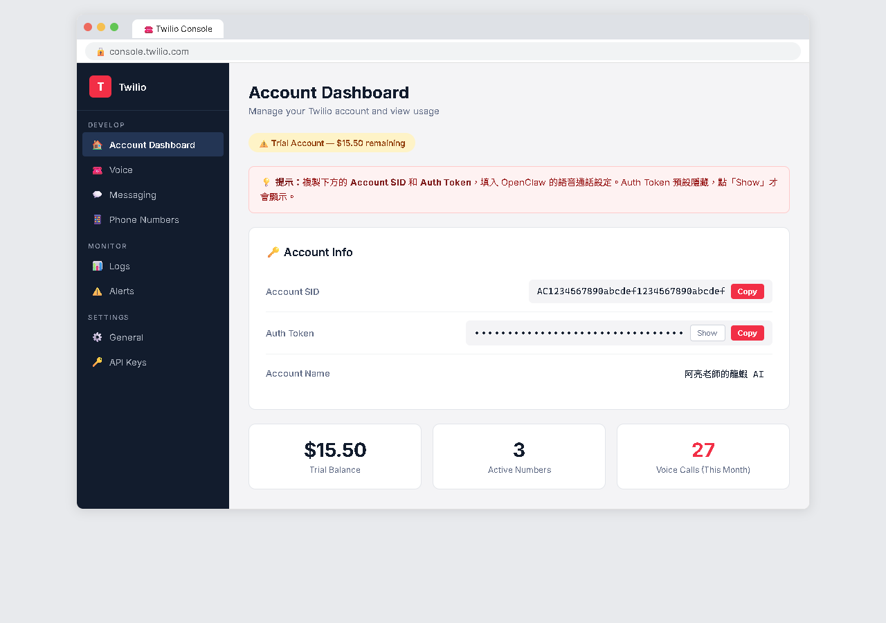
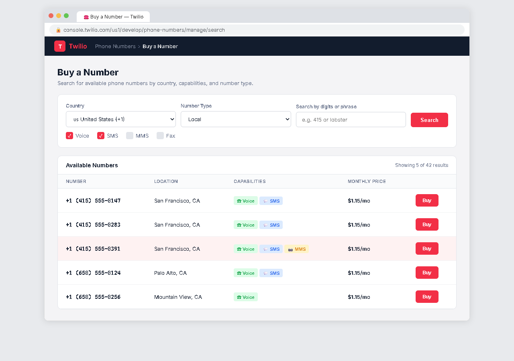
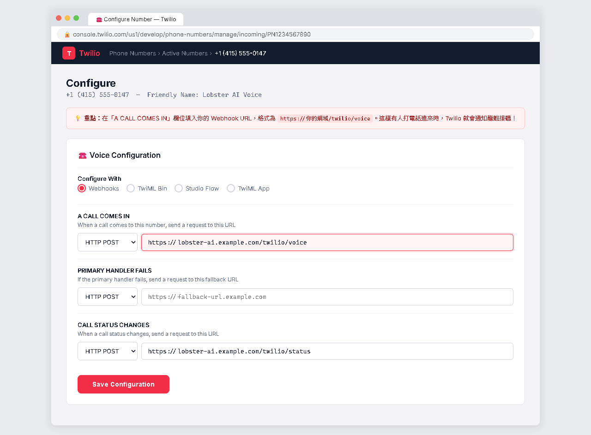
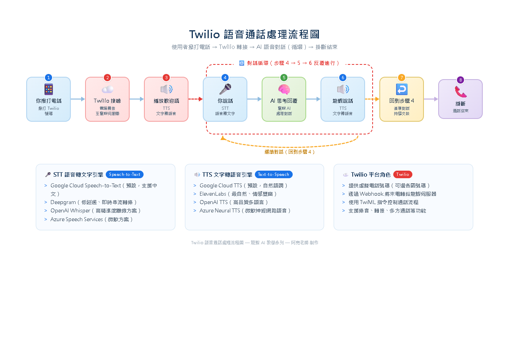
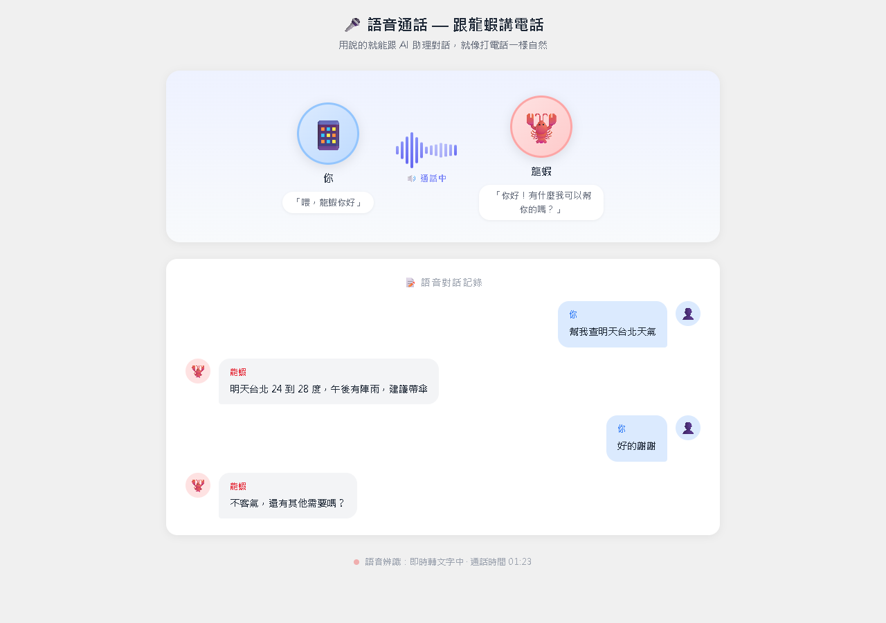

AI Agent 自主代理三王實戰
給龍蝦一個電話號碼，讓它能接打電話——開車問事情、長輩不會打字、語音客服，通通搞定
到目前為止，你跟龍蝦的互動都是靠「文字」。但你有沒有想過，直接打電話給龍蝦？
開車時不方便打字，直接打電話問龍蝦事情，安全又方便
長輩不會用 LINE 打字，但他們很會打電話——電話就是最好的介面
在外面需要龍蝦幫你查資料，拿起手機撥個號碼就搞定
做小生意的人，用龍蝦接聽客戶來電，自動回答問題
Twilio 是全球最大的「通訊平台即服務」（CPaaS）公司。它讓開發者透過 API 來打電話、傳簡訊。你不需要了解電話系統底層技術——Twilio 都幫你包好了。

| 功能 | 說明 |
|---|---|
| 接聽電話 | 給龍蝦一個電話號碼，使用者打來龍蝦自動接聽 |
| 撥打電話 | 龍蝦主動撥打電話給指定號碼 |
| 語音辨識 | 來電者說的話，即時轉成文字給龍蝦 |
| 語音合成 | 龍蝦的文字回覆，用語音唸出來給來電者聽 |
| 簡訊 | 龍蝦也可以收發 SMS 簡訊 |
Twilio 不是免費的——它是商業服務。但費用比你想像的低：
| 項目 | 費用（美元） | 說明 |
|---|---|---|
| 電話號碼 | $1.15/月 | 美國號碼月租費 |
| 接聽電話 | $0.0085/分鐘 | 每分鐘不到 0.3 台幣 |
| 語音辨識 | $0.02/15 秒 | Twilio 內建的 STT |
| 語音合成 | 免費~$0.01/句 | 看你用哪種 TTS |
| 撥打電話 | $0.014/分鐘 | 撥打美國號碼 |
https://www.twilio.com/try-twilio 註冊在 Twilio Console 首頁就能看到兩個重要的值：
Account SID：AC1234567890abcdef... Auth Token：（點擊眼睛圖示顯示）

openclaw plugins install twilio-voice
## Twilio（語音通話） - Account SID: 你的_Account_SID - Auth Token: 你的_Auth_Token - 電話號碼: +1xxxxxxxxxx（你買的號碼） - 語音語言: zh-TW（中文） - TTS 引擎: google（Google 語音合成）

https://lobster.你的域名.com/twilio/voiceopenclaw gateway restart # 重啟 Gateway6 / 11

1. 你撥打 Twilio 號碼 2. Twilio 接聽，通知 OpenClaw（透過 Webhook） 3. OpenClaw 送出歡迎語（TTS 語音合成 → 播放給你聽） 4. 你開始說話 5. Twilio 即時語音辨識（STT），把你的話轉成文字 6. OpenClaw 把文字送給 AI 模型處理 7. AI 產生回覆文字 8. TTS 把回覆轉成語音，播放給你聽 9. 重複 4-8 直到掛斷
| 引擎 | 中文支援 | 準確度 | 費用 |
|---|---|---|---|
| Twilio 內建 | ✅ zh-TW | 中等 | 包含在通話費裡 |
| Google STT | ✅ zh-TW | 高 | 額外計費 |
| Deepgram | ✅（有限） | 高 | 額外計費 |
| 引擎 | 中文音質 | 自然度 | 費用 |
|---|---|---|---|
| Twilio 內建 | 一般 | ★★☆☆ | 免費 |
| Google TTS | 好 | ★★★☆ | 低 |
| ElevenLabs | 很好 | ★★★★ | 中 |
| OpenAI TTS | 很好 | ★★★★ | 中 |

打電話問行程、改行程、查資料。「幫我查一下明天下午有什麼行程？」「把四點半的改到五點。」
阿公打電話問天氣：「明天要不要帶傘？」龍蝦：「明天台中 22 度，有小雨喔，出門記得帶傘。」
客戶打來問營業時間、訂位。龍蝦自動回答、幫忙預約，不用你親自接電話。
搭配 HEARTBEAT.md，龍蝦每天早上八點打電話報行程和天氣：「早安！今天有一個行程：下午 2 點看牙醫。」
自動錄音方便回顧，設定保留天數，儲存到 workspace/data/recordings/
避免騷擾電話。可設黑名單或白名單模式（只接白名單電話）
避免意外高額費用。最長 10 分鐘、每日上限 30 分鐘
| 問題 | 回答 |
|---|---|
| 台灣手機可以打美國號碼嗎？ | 可以，但有國際通話費。建議用 LINE Out 或其他 VoIP 撥打更便宜 |
| 語音辨識聽不懂台灣國語？ | 設定 zh-TW，說慢一點、安靜環境，或升級 Google STT |
| 通話中可以操作電腦嗎？ | 可以！搭配 Desktop Agent（CH18），語音指令操作電腦 |
| 可以多人同時打嗎？ | 可以，每通電話獨立對話、獨立計費 |
| 有其他選擇嗎？ | 目前官方支援 Twilio，社群開發中 SIP/WebRTC 方案 |
這一章讓你的龍蝦學會了「說話」！
註冊、取得 SID/Token、購買電話號碼
安裝外掛、設定 Webhook、測試通話
STT 語音辨識 + AI 處理 + TTS 語音合成
個人助手、長輩友善、客服機器人、電話提醒
你的龍蝦現在是一個真正的全方位 AI 助手——能打字聊天、能看圖片、能操控電腦、能打電話。
📖 下一章預告：CH21 自動化與排程
教你打造一隻全自動的龍蝦——不用你開口，它就會主動幫你做事。每天自動報天氣、到時間自動提醒行程、收到特定訊息自動處理！